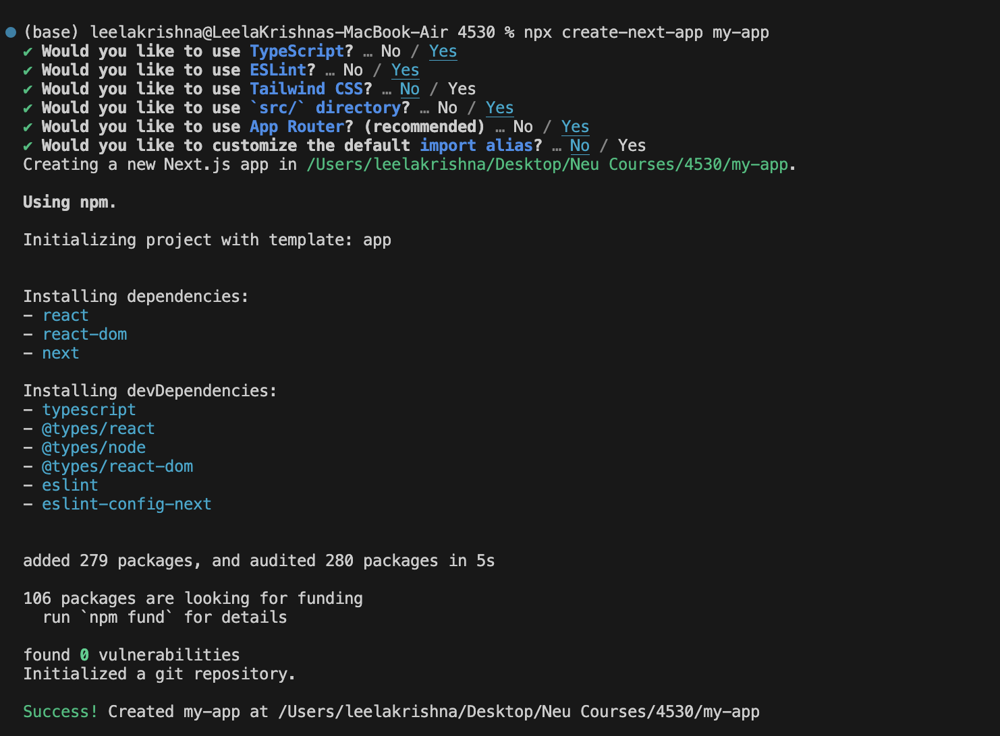
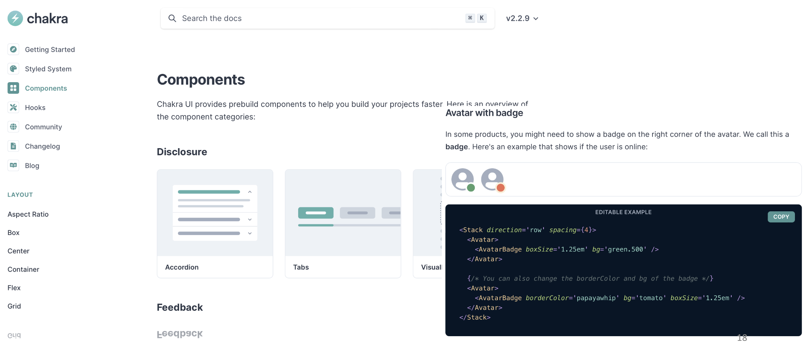

React Basics
This tutorial covers the basic concepts of react. By the end of this tutorial, you will be able to create a new react app, understand the basic concepts of react such as states and props, understand React hooks and handling events.
Creating a New Next Js App
Let’s use npx and create-next-app to create a new Next.Js project
-
npx stands for Node Package Execute. It is a runner that can execute any package that you want from the npm registry without even installing that package. In this case npx tool temporarily installs the create-next-app npm package and uses it to create our project.
-
Please check the following reference to the Next.Js boiler plate and getting started with framework Next.Js official documentation
-
We use the create-next-app npx package to create an application that creates a fully-featured TS package.
npx create-next-app my-app- Note 1: This will create a new project directory called my-app under the current directory.
- Note 2: This will create a git repo in my-app, so you probably shouldn’t do this inside a pre-existing git repository.
- Note 3: Create the project with the following details after executing the command 
- Navigate to the project directory using the command:
cd my-app - To start the development server for React, run the command:
npm run dev - Navigate to http://localhost:3000/ to see the default react page.
- After a few seconds, a browser window opens, with our app running:
- Chakra UI components can be reused and the library can be installed for Next.js with following command:
npm i --save @chakra-ui/react @chakra-ui/next-js
React Component
React follows a Component based architecture. A component is a repeatable html element with built-in state, business logic, and a lifecycle. The component may be something as simple as a single html element such as an input box, or a button, or a complex entity made up of other components.
Components are the basic building blocks of a React application and they allow the developer to split the UI into independent and reusable pieces where each piece can be used in isolation.
Creating A Function Component in React
The simplest method to define a component is to write a function in Javascript. These components are also widely referred as functional stateless components but in the recent versions of React, they have the capabilities to contain state as well.
import * as React from "react";
interface Props = {name?: string};
function App (props: Props) {
return (
<div className="App">
<h1>Welcome to React with Typescript Tutorial.</h1>
</div>
);
}
export default App;
A Few Things to Note About React Components:
- The root (App) component is the entry point for the React App and all other components are nested in it.
- We define a function component using a javascript function, passing the props type in as a generic parameter.
- The import statement is used to import the public classes/functions from the
reactlibrary. - A function can return a single top level element.
- div is the top level element in this case and other elements can be nested in it.
- The attribute
classNameis used to specify a CSS class name if CSS properties have been defined seperately for a class. classNameattribute is used to set the value of an element’s class attribute. Using this property, the user can set the class of an element to the desired class.
- The attribute
- div is the top level element in this case and other elements can be nested in it.
- The round brackets (()) after return are used to span a JSX/TSX element across multiple lines.
- At last , the component needs to be exported from the current file, so that it can be imported somewhere else and can be used either in isolation or combination with other components for rendering on the UI.
- Elements on one line can be returned directly.
- Each instance of a component creates a new element independent of other instances of the component.
- Each component has it’s own state, props, and lifecycle (which will be explored later in the tutorial).
Template For Structure of Function Component
import * as React from "react";
interface Props = {property1?: value1, property2?: value2}
function ComponentName (props: Props) {
const handler = () => {
...
};
return (
<div>Our TSX</div>
);
};
ComponentName.defaultProps = {
...
};
export default ComponentName;
Props
React components are similar to JavaScript functions and can accept arbitrary arguments called props. Since components are reusable, props are especially useful to display different content in each instance of the component. Let us extract the header elements from the previous code snippet into a new component called Header. We can then use props to say “hello” to different users.
- Create a new file in
src/directory calledHeader.tsx - Create and export a function called Header in the file as below: ```ts import React from “react”;
interface IProps { name?: string; }
const Header = (props: IProps) => { return <h1>Hello, {props.name}</h1>; };
Header.defaultProps = { name: “World” };
export default Header;
- The above code snippet creates a new function component `Header` and prints the value of the `name` passed in the props.
- It defines a defaultProps for the component `Header` where the default value for `name` is used in case the value for props for `name` is not passed in any instance of the component.
- In App.tsx:
- Remove the code in h1 tags.
- Import the Header component as below:
- ```ts
import Header from './Header';
```
- Update the contents of return as below:
- ```ts
<div className="App-header">
<Header />
<Header name="John" />
<Header name="Jane" />
</div>
```
- Save all files and run npm start
A few things to note from the above example:
- Component.defaultProps can be used to specify default values for props.
- Components are rendered to the user interface and the component’s logic contains the data to be displayed in the view(UI).
- Curly braces ({}) in JSX/TSX are used as a connection between the data to be displayed in the view and the component’s logic for displaying the data in the view.
- In our example, `{props.name}` will reflect the value of the property `name` in the view(html) for the cases when the values "John" and "Jane" are passed as props for the `name` property.
- If no props are passed for an instance of the component, then it will display the default value of props.
## State
State management is just a means of facilitating data sharing and communication among components. It creates a concrete data structure that you can read and write to reflect the state of your program.
```ts
const [counter, setCounter] = useState(0)
The above snippet shows creation of counter state with an intial value of 0. Using the array destructuring syntax we extract out the state variable and the function to update the counter value.
In its most basic form, a State object is a JavaScript object that represents the part of a component that can change as a result of a user’s action. States can also be thought of as a component’s memory.
State update calls are asynchronous. As one cannot expect to call the update state function on one line and expect the state to be updated on the next. The reason for this is because update state methods are more of a request than an immediate order to update state. So React schedules an update to a component’s state object. When state changes, the component responds by re-rendering. Also multiple update request may be batched into one for performance reasons.
Changes in state and/or props will both cause our React component to re-render. Changes in state, on the other hand, can only occur internally as a result of components modifying their own state.
Communication Between Components:
Parent To Child Component Communication:
Passing values from a parent component to a child component is simple. We only have to pass the values as props of the child component. The child component can then use the props object to output results. In the example code you will see that CounterContent component accepts a counter prop which is then used to display the value inside div element.
import { useState } from "react";
interface CounterContentProps {
counter: Number;
}
function CounterContent({ counter }: CounterContentProps) {
return <div>Counter: {counter}</div>;
}
function Counter() {
const [counter, setCounter] = useState<number>(0);
return (
<>
<CounterContent counter={counter} />
<button onClick={() => setCounter(counter + 1)}>Increment Count</button>
</>
);
}
Child to Parent Component Communication
For passing data from child component to parent component do the following steps:
- Declare a callback function inside the parent component. This function will get data from the child component.
- Pass the callback function to the child component as props.
- Child then sends the update to the parent through the use of the callback function.
In the example below we have four children components:
- CounterContent: Displays the counter value
- IncrementCounterButton: Increments the counter value
- DecrementCounterButton: Decrements the counter value
- CustomCounterButton: Sets the counter to a particular value.
All callback functions passed to the children component are declared in Counter function which is the parent component that maintains the state value for counter.
import { useState } from "react";
interface CounterContentProps {
counter: Number;
}
interface IncrementCounterButtonProps {
incrementCount(): void;
}
interface DecrementCounterButtonProps {
decrementCount(): void;
}
interface SetCounterButtonProps {
setCount(value: number): void;
}
function CounterContent({ counter }: CounterContentProps) {
return <div>Counter: {counter}</div>;
}
/**
* Child component accepts a incrementCount callback function as a props.
* The callback which is declared inside the parent component triggers a state update.
*/
function IncrementCounterButton({
incrementCount
}: IncrementCounterButtonProps) {
return <button onClick={() => incrementCount()}>increment Count</button>;
}
/**
* Child component accepts a decrementCount callback function as a props.
* The callback which is declared inside the parent component triggers a state update.
*/
function DecrementCounterButton({
decrementCount
}: DecrementCounterButtonProps) {
return <button onClick={() => decrementCount()}>Decrement Count</button>;
}
function CustomCounterButton({ setCount }: SetCounterButtonProps) {
// change this value to see how child passes count value data to parent through
// the use of callback function
const dummyValue = 100;
return (
<button onClick={() => setCount(dummyValue)}>
Set Count to {dummyValue}
</button>
);
}
/**
* Parent Component where state and callbacks are maintained.
**/
function Counter() {
const [counter, setCounter] = useState(0);
const decrementCount = () => {
if (counter === 0) return;
setCounter(counter - 1);
};
const incrementCount = () => {
setCounter(counter + 1);
};
const setCount = (value: number) => {
setCounter(value);
};
return (
<>
<CounterContent counter={counter} />
<IncrementCounterButton incrementCount={incrementCount} />
<DecrementCounterButton decrementCount={decrementCount} />
<CustomCounterButton setCount={setCount} />
</>
);
}
Handling Events
- React impelemnts its own system of handling events that is very similar to handling events on DOM elements. There are some syntax differences:
- React events are named using camelCase, rather than lower case.
- With JSX a function can be passed as an event handler instead of a string.
For example, the HTML
<button onclick="incrementCounter()">Increment Counter</button>
is slightly different in React:
<button onclick="{incrementCounter}">Increment Counter</button>
- React provides an equivalent of each event that you might be familiar with from standard HTML DOM. Events typing can be imported directly from react as shown in the example below:
import { MouseEvent } from "react";
function HelloWorld() {
const sayHello = (event: MouseEvent) => {
event.preventDefault();
console.log(`${event.currentTarget.tagName}: says hello, world.`);
};
return (
<div>
<button onClick={sayHello}>Submit</button>
</div>
);
}
export default HelloWorld;
For the list of all the supported events refer https://react-typescript-cheatsheet.netlify.app/docs/basic/getting-started/forms_and_events/#list-of-event-types
Please check the list of commom events and instances in which they are used https://react.dev/reference/react-dom/components/common
React Hooks
React hooks are built-in functions which allows us to use state and other lifecycle features. The most basic hooks used by react are useState() which adds a state variable to a react component and useEffect() which is the lifecycle hook for a component. State of component referes to the data it is holding at a particular moment in time.
useState():
In this section we will see how we can add state to a React Component using the useState() hook provided by React. The useState hook takes the initial value of the state variable as an argument, the initial state can be any type you want (a string, a number, an array, an object) or a function. Only on the first render will the initial value be assigned. Each useState call returns a two-element array. The state variable is the first element of the array, followed by a function to change the variable’s value.
- We’ll start by defining and initializing state for the number of times the button is clicked, by adding the a state variable as follows:
import {useState} from 'react';
function Counter() {
const [count, setCount] = useState(0);
...
}
This line of code looks a little strange, so let’s break it down:
- When the hook useState() is invoked, it returns an array. Where the first item is the state value, and the second item is a function that updates the state.
- First, we import the useState from react library.
- useState is a React function that lets us create state, passing in a default value as a parameter. In our case, we pass it a default value of 0.
- The useState function returns an array containing two elements:
-
- The first array element contains the current value of state.
-
- The second array element contains a function to set state to a different value.
- We destructure the array and store the first array element (the state value) in count, and the second array element (the function to set state) in setCount.
- The rest of the function now has access to the count, via the count variable. The function is also able to increment the count, via the setCount variable.
- Let’s add a function to update the state of the variable:
function incrementCount() {
setCount(count + 1);
}
- Now, functions to set the piece of state take in the new state as their parameter.
- Next we’ll make the component return the count along with a button to increment the count when clicked. Final function code will be as follows:
import { useState } from "react";
function Counter() {
const [count, setCount] = useState(0);
function incrementCount() {
setCount(count + 1);
}
return (
<div>
<h1>Count: {count}</h1>
<button onClick={incrementCount}>Click me!</button>
</div>
);
}
export default Counter;
If we give this a try in the running app, we should find the count variable’s value to keep incrementing by one every time the button is clicked. After we’ve got our heads around the code needed to define state, accessing and setting state is fairly simple and elegant.
Updating Arrays in State
Suppose we want to maintain an array in our state object.
const [list, setList] = useState([]);
Now suppose we want to add an element to this list and have the component re-render to reflect the changes. We might try pushing an item to the list like so:
list.push(element); // doesn't work
However, React will not re-render the component as it does not detect a change in the state. This is because the object referenced in the state is the same before and after pushing the element, and so to React, the object looks the same because the reference is the same. To get around this, we must invoke the setList function to create a new reference so that React will detect the change and re-render the component. The easiest way in this case would be to use the spread operator (...) to make a copy of the existing list and push a new element to the new list:
const newList = [...list]; // copy the current list
newList.push(element);
setList(newList)
useEffect():
Now let’s have a look at how to invoke the code to execute at a certain point in the component’s lifecycle. Older versions of React consisted of different Lifecycle hooks that allowed a user to hook into various phases of component rendering such as componentDidMount, ComponentDidUpdate, etc. which have all been condensed into a single function called useEffect(). Let us observe how this hook behaves by printing out the count in browser console.
- As always, we will start by importing the function from the react library:
import { useEffect } from "react";
- Next we will add the function to our existing counter component:
useEffect(() => {
console.log(`The current count is ${count}`);
}, []);
Let’s break down this code to understand what is happening:
- We use React’s useEffect function to hook into the component life cycle.
- The function takes in an arrow function, which executes when the component is first rendered.
- The function takes in a second parameter, which determines when our arrow function is called. This parameter is an array of values that, when changed, will cause the arrow function to be invoked. In our case, we pass in an empty array, so our arrow function will never be called after the first render.
- If we now try the running app and open the console, we’ll see Counter first rendering only appears once.
- Let’s remove the second parameter into useEffect now:
- If no second parameter is provided, will cause the arrow function to be invoked first on mount and then on every re-render.
useEffect(() => {
console.log(`The current count is ${count}`);
});
- Additionally we can also pass the variable in the array to observe only changes related to a particular value (as below).
- Now we can see that the componenet will render everytime the value of count is changed.
useEffect(() => {
console.log(`The current count is ${count}`);
}, [count]);
- Finally, our component counter will look like:
import { useState } from "react";
import { useEffect } from "react";
function Counter() {
const [count, setCount] = useState(0);
function incrementCount() {
setCount(count + 1);
}
useEffect(() => {
console.log(`The current count is ${count}`);
}, [count]);
return (
<div>
<h1>Count: {count}</h1>
<button onClick={incrementCount}>Click me!</button>
</div>
);
}
export default Counter;
Object Dependencies in UseEffect
Consider a case where useEffect depends on an object:
import { useState } from "react";
import { useEffect } from "react";
function Counter() {
const [counter, setCounter] = useState({ count: 0, increment: 1 });
function incrementCount() {
counter.count += counter.increment;
setCounter(counter); // will not cause component to rerender
}
// Will not get called when incrementCount is called
useEffect(() => {
console.log(`The current count is ${counter.count}`);
}, [counter]);
return (
<div>
<h1>Count: {count}</h1>
<button onClick={incrementCount}>Click me!</button>
</div>
);
}
export default Counter;
In the example above, we’ve modified the counter to be an object containing both the current count and the amount to increment the counter by when the button is clicked.
Similar to the list case for useState, updating an attribute of an object and setting the state variable to that same object reference will not cause a re-render, and useEffect will not detect a change in its dependencies, even though we have changed one of the attributes. To properly invoke a useEffect call, we must change the object reference itself:
function Counter() {
const [counter, setCounter] = useState({ count: 0, increment: 1 });
function incrementCount() {
// we use the spread operator (...) to make a copy of the object
setCounter({...counter, count: counter.count + counter.increment});
}
useEffect(() => {
console.log(`The current count is ${counter.count}`);
}, [counter]);
return (
<div>
<h1>Count: {count}</h1>
<button onClick={incrementCount}>Click me!</button>
</div>
);
}
export default Counter;
The useEffect hook will now be invoked with each button click. However, our useEffect is dependent on the entire counter object, meaning that a change to any of its attributes will cause the useEffect hook to be called, which is not always a desired behavior. We can get around this by being more specific in our dependency list:
function Counter() {
const [counter, setCounter] = useState({ count: 0, increment: 1 });
function incrementCount() {
// we use the spread operator (...) to make a copy of the object
setCounter({...counter, count: counter.count + counter.increment});
}
function incrementIncrement() {
// we use the spread operator (...) to make a copy of the object
setCounter({...counter, count: counter.increment + 1});
}
useEffect(() => {
console.log(`The current count is ${counter.count}`);
}, [counter.count]); // Now that we only depend on count, this function will not be called if the incrementIncrement function is called
return (
<div>
<h1>Count: {count}</h1>
<button onClick={incrementCount}>Click me to increment the count!</button>
<button onClick={incrementIncrement}>Click me to increase the increment amount!</button>
</div>
);
}
export default Counter;